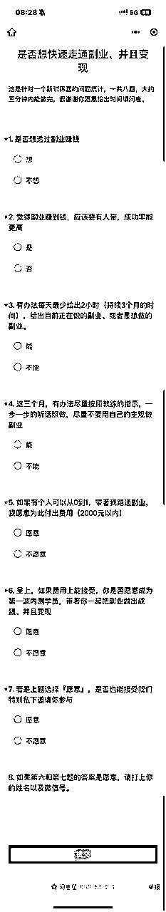
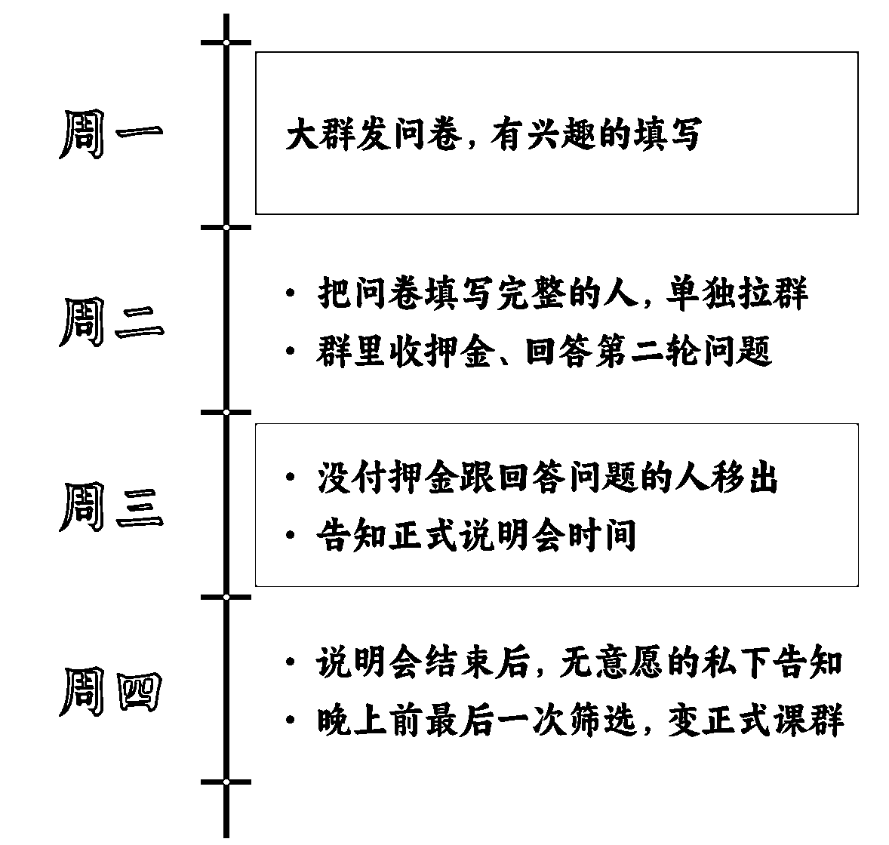
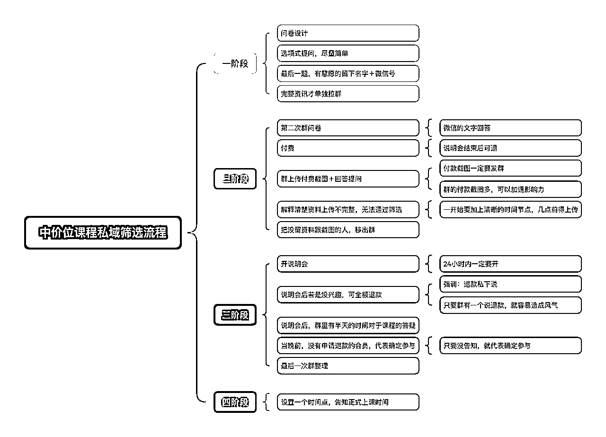

来源：https://oee5lr7gsk.feishu.cn/docx/HX6idD7G4o8IWwxL1q3c5vgcn4c
全文共：5,646 字
预计阅读时间：6.66 分钟
圈友们好，我是根源
目前已经在知识付费、以及私域运营的赛道深耕两年半
这一年多，跟明白老师还有陈雪美女一起做俱乐部
成绩都还稳定，会员的净成长跟复购率，数据也都挺好
前面的两篇文章谈的都是「如何选人」这个主题
这一次依旧想就着这个主题做一点延伸
同时这次的主题会有一点不一样，就是『如何更好地筛选私域用户』
也因为我最近打算开一门新课
想着尝试着优化私域筛选流程，更精准地找到意向客户，以及提高转化率。
最终这次私域转化的尝试，结果还不错
差不多做到了40%的转化率
那我也通过这篇文章，把完整的筛选流程和我做的每一个细节，做详细的拆解
希望这些经验或方法，能帮到正在看文章的圈友
很欢迎看完文章后
能一起讨论。
我发现在既有的私域流量里面要再进行二次转化，这事情其实挺难的。
当然你可以说，二次转化的触达，这也是对于老学员的一种福利。
因为他们先行购买了初阶课，所以，他们拥有能够知道进阶课怎么报名的了解渠道，
但这毕竟是一个我们要向别人收钱的举动，所以得谨慎，同时二次转化也不容易。
我觉得公域跟私域，在对待方式上，可能会有一点比例上的区别。
公域，我们得面向很多也不一定是我们要的人。
当然里面可能也有我们想要招募进来的人，因为公域必然只能用，最粗颗粒的方式筛选。
但是私域很不一样，私域是一个我只从我自己的群体里面，找到更适合的交付对象。
因为私域是一种双向选择。
就是不止对方要喜欢我，我也得觉得他是一个很棒的人，所以我也想跟他有更多的交集。
就像谈恋爱一样，必须得两情相悦，这个私域才可以变得更加的稳定。
之前在既有的私域里面做二次转化的时候，有尝试过很多种方法。
⭕️就类似免费的开说明会，然后这个说明会只针对内部的人招生。
那对于外部的人，这个说明会就是收押金，在自己的群里面收一个可能99元的押金，
然后听完说明会之后，如果说他发现对于这个内容可能不喜欢，或者是暂时没有需求，那押金会原路返回。
⭕️那再来一个最初步的方法，就是在群里面直接做群公告@所有人，
然后告诉他们有新课程，如果你有兴趣的话，请找我报名。
过去，可能这种方法都会比较单一。
因为我会一直觉得私域的群体，在自己的体系里面，
如果说我们真的有新东西要发布，一定要以私域的人为优先。
当内部自己人先知道之后，才可以对外的发布。
可能对于内部会员的人会感觉没什么，反正我就是收到一个讯息，
但是我内心中一直有一种毛病，那毛病就是既然你们是一开始信任我的人，
所以，所有的讯息一定以内部会员优先，优先的得知权。
如果是对外，就需要额外再付费的。
其实我一直觉得它必须得放在我的体系里面，并且把这个事情放大。
就很像是因为你是我更高级的会员，所以，所有的优惠福利你一定得优先知道。
你要是不知道，以前我不会把这个讯息公布给别人。
我觉得这个其实是私域上的我认为很重要的一个点，
就是他们是我们更资深的会员，就能够得到越多的福利，这福利包括我们有新东西的发表。
这次我做了一个尝试，因为转化课程有分低价跟中价，还有高价，低价可能是199、299、399，
像低价的课我觉得直接发就好了，因为价格毕竟不高。
我们给内部的人一些福利，可能200块的折价券，100块折价券，我觉得就已经很好了，
又或者是，我推广的时候，给出更高的返佣。
但中价位的课程，就类似它是过千元的，
都需要刻意的筛选，这次我做了一个尝试。
因为我想要开一个中价位的内测课，这个课程我认为很好，但是我还在思考能不能卖得动。
所以，我就没有对外招生，我打算对内招一个小班级。
招小班有个好处：
也就是
这次的筛选方式，适合新课的尝试、迭代发售，针对小范围开展。
那这次的内测，我想了一个步骤，测试了一套框架，得到一个我认为还可以的小结果。
因为中价位的课，我要的目的是筛选，
就是如何让进来这个课程的人，他能够真的知道，以及对于课程内容是有需求的。
所以，我在内部的会员群做筛选
目前我们有三个会员大群，每个群是260人，三个群加起来大概在600多人。（三群的人还没满）
然后我直接用群提醒的方式去@所有人，内容如下：
@所有人
各位早安
很抱歉突然用群提醒
发一个很重要的『问卷』
这个时代赚钱变得很困难
我想
大多数的人
一定有想做点副业的想法
俱乐部的所有内容
基本上，都跟『带著赚钱』
没有直接的关联性
但我自己在做副业上
以及带著学员
做副业并且赚钱这事情上
一直都有著挺不错的经验
所以想做一个统计
也是俱乐部升级后的一个新训练营
这训练营比较直接
可以理解为带著你做副业陪跑
三个月内
有很大的机率可以跑通
并且真正的赚到钱
如果对于我上面提到的内容
你是感兴趣的
可以填写以下的问卷！
所以第一阶段，我就简单发了一段话，然后丢出了一个问卷，
问卷的设计题目不多，都是二选一的选项。

这阶段的筛选方式
叫做『活跃度筛选』，因为群的人只要过200人
尤其每天的讯息又多
认真看群的人数，肯定只有固定比率，不可能全部都看
但只要愿意看的，大多都是
对社群的认可度相对高的人。
这个问卷里面有个重点是，
我会把课程的大概金额放上去，也会把它是否有这个需要放上去。
最后一个提问设计，就是如果说你对于这个金额你觉得能接受，然后意愿度又很高，
这个课程也确实是你想要的需求，欢迎在底下留你的名字跟微信号，
也就这个问卷只有最后一题是填空题，如果填的话，就是手打文字。
这个问卷，我所有的提问都设置成二选一，
好处就是快，能很快速的看完并且给出选项。
就如果说我弄了七题，最后那个人只答了六题，他就算留资料，这个人我也不选。
然后，完了之后，因为表单里面，最后一题是填空题，需要填昵称和微信号
有人可能就填的名字，有人可能会完整的填姓名和微信号，
我在筛选的时候，只筛选那些填姓名加微信号，以及每一题都完整做完的人。
这部分学员才是我这一次想要内测进来，当成是我新课程的对象。
然后在600人里面，这个最后填表单的人大概有89人，
然后89人里面有把所有的内容完整填完，加上最后资料有完整留完的，有58人。
这58人，我全部一个一个微信私聊，把他拉到一个正式的说明会群。
那因为问卷是第二阶段筛选，所以到了第三阶段进群之后，我就会说：
因为这个课很特别
就是学员必须得
对我有很高的信任度
以及你真的有需求
才会更适合我的课
所以，我在这个说明会的群里面，我又做了第三段筛选。
进群我就直接说，这是一个第三次的筛选。
然后三次筛选，你们必须得做两件事：
我弄了一个付款链接，
就跟他说这个费用是听说明会的押金
如果说听完说明会，你发现这个课真的不符合，真的不是一个你当下的需求，
到时候我会全额退费。
也就是我说明会收的费用，就已经是这个课程的正价费用，而不只是一个押金。
然后，我同时发了一段提问，也是一个第二次的问卷
1、姓名：
2、微信名：
3、目前是否有正在进行副业：
4、是否认同，做副业的初期听话照做，成功率比较高，
目前是否有正在进行副业：
5、一年的时间，想透过副业
赚到月收入多少钱：
这个提问也是一个第三阶段意愿度的筛选。
然后，都做完之后，第三阶段我会设定一个时间点，
可能是晚上十点之后，可能是隔天的七点之后，我就会正式地做第三次筛选的结尾，
就是如果你没有完整的附上付款截图，以及回答问题，第三段筛选都算不过关。
所以，当他们都发完之后，我就会在第三次筛选时间节点一到，
我会群提醒，跟他们说：
第三段筛到这儿就告一段落，
那也很谢谢各位愿意考虑以及信任我的人
目前一共收到40位的截图
以及提问
现在我会开始做第三次筛选
把没有截图加上提问的夥伴
先暂时移出群
然后
这个群就会变成
副业起跑的正式说明会
有被我移出的夥伴
提前跟你说声抱歉
因为这次的训练营
比较特别
所以我的筛选机制
会比较严格一些
然后，当我把人移出去后，
我就是接着进到第三次的筛选，在隔天的什么时间，我会有一个说明会
说明会是用文字进行，大概多久结束。
然后时间到了，我就开始正式的说明会，
说明会结束之后，最终决定报名的学员，就会留下来，退费的学员会进一步从群里移出。
说明会的群，也正式变成课程群
第四阶段比较简单
需要特别注意的就是时间的节点不能相隔太久。
意思就是
当第三阶段没付押金的人移出群后
正式说明会的时间，一定得再24小时之内开说明会。
这过程，有一个重点，就是必须得很紧凑。
假设我周一发了问卷，我周三就得把群拉好，把人都邀请进去，
周三群拉好之后，我在群里做第二段筛选，
收钱以及跟他们得发一段我设置的提问。
然后晚上就要让他们决定是否要参加，要退费的赶快退费，
所以，这个时间极速其实很短，它中间不能隔太久，因为中间隔太久，他们就消火了。
对于有兴趣的人，他们就会突然发现：
哎，好像我又暂时没需求了。
所以大原则就是，时间必须得短，不能够拖太长，三天四天之内一定完成。
因为总共我做了三段筛选。
所以，他们进群之后付了钱，付款截图一定要发在群里，
因为他如果把付钱的截图发群里，会让大多数人会感觉：
哎，有人付了，那我觉得应该可以尝试。
因为我最后提到这是可以全额退款的。

第四阶段的说明会一讲完，我就会说
晚上的八点
是各位的最后决定，
如果听完说明会之后，
你发现这个课程可能不适合你，
这个训练营可能不是你目前所需要的，
那欢迎你私下跟我说。
这个时候就得私下说了，因为当退费的人多，在群里面会有一种风气，
只要有一个人退费，他们就会觉得，那既然有一个人退费，那我也可以退，
所以这是一种群的感觉。
前面每一个阶段的筛选，我都是属于在群里面发，
只有最后一段要退费的时候，我会特别的备注，
如果说这个课你发现你没有兴趣，欢迎私下找我。
第四段筛选结束，这个课程也正式开始，
你们付的费用如果没有退费，就是我们正式课程的费用的金额。
最后，第四阶段私下找我的人的退款有四个。
所以，这一段流程的好处就是
第一个我认为转化是不错的
对于一个2000左右价位的课程
第一阶段大群填问卷人数：88人
第二阶段拉群的人数：58人
最终报名课程的学员是33人
从问卷到到进群的转化率，接近38%。
这是一个还不错的转化率，因为最终愿意参加的人，都是特别精准的会员。
虽然就整个社群的比例量不高，
但是，如果说这个课程单价高，
其实能够去更好的让我们知道，群里面有哪一些人是我们平时没有唤醒的。
因为每一种不同新主题的课，喜欢的人都不一样，
尤其当我们做一个可能将近快接近1000人的俱乐部，
可能不是每个人都对沟通有兴趣，不是每个人都对写作有兴趣。
所以，这个方法的好处就是能够知道目前社群里面有多少的人是对这个有兴趣的。
再一个就是，我认为多少人都可以开，
以及因为一个2000块的中价位的课，你收五个人，就是1万了，这是一个很好的正向现金流。
只要可以开，就代表有市场，
有市场我们未来就可以让我们的课程的内容变得更丰富。
这是一次透过筛选流程的优化，做的私域转化的尝试。
然后最后结尾附上一个我做的比较完整的思维导图的路径。
不难，但是我觉得这个私域筛选的方法，
每个细节如果做好的话，应该可以提升挺高的转化率。

所以，谢谢各位。
我是根源，同时也是第四期的生财圈友
一个有 2w+ 实战案例的心理咨询师
12年线下销售、团队管理经验。
2022 年开始转型线上，做一些知识付费的项目。
过去曾发表过几篇文章
都能看到这，代表你对文章的喜爱
肯定有一定的程度！
也欢迎阅读过去我写过的历史文章。
2021年的文章（精华x1）
2022年的文章
2023年的文章（精华x6）
2024年的文章（精华x5）